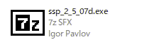
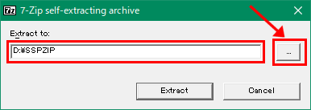
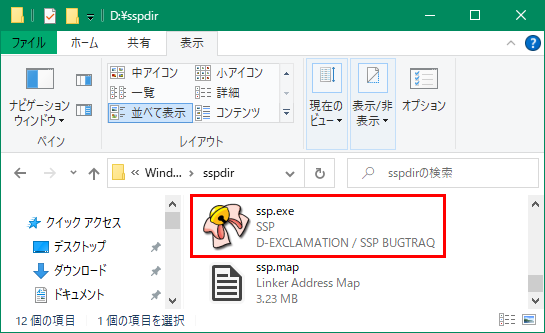
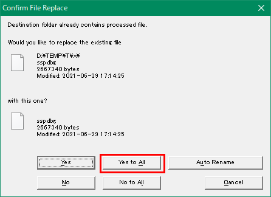

インストール・更新方法
インストール方法 ダウンロードしたファイルを実行します。  実行するとこのダイアログが出てきます。 Vista以降のユーザーの方へヒント：Program Files以下やその他システム管理下のフォルダにインストールしないで下さい。  作業が終了しましたら、インストール先フォルダを開いて、SSP.EXEを実行してください。 |
更新方法2.2系後半より、自動更新機能がつきました。 更新前にSSPを終了してください。 ダウンロードしたファイルを実行します。 実行するとこのダイアログが出てきます。  ファイルの上書きを警告するダイアログが出たら、[Yes to All]を選んでください。 |
使い方
使い方は人それぞれで多様ですが、一つの例として、 『伺か』を始めてみたい人のための簡易リンク集に簡単な使い方の説明があります。
『伺か』を始めてみたい人のための簡易リンク集に簡単な使い方の説明があります。
参考にして使ってみてください。